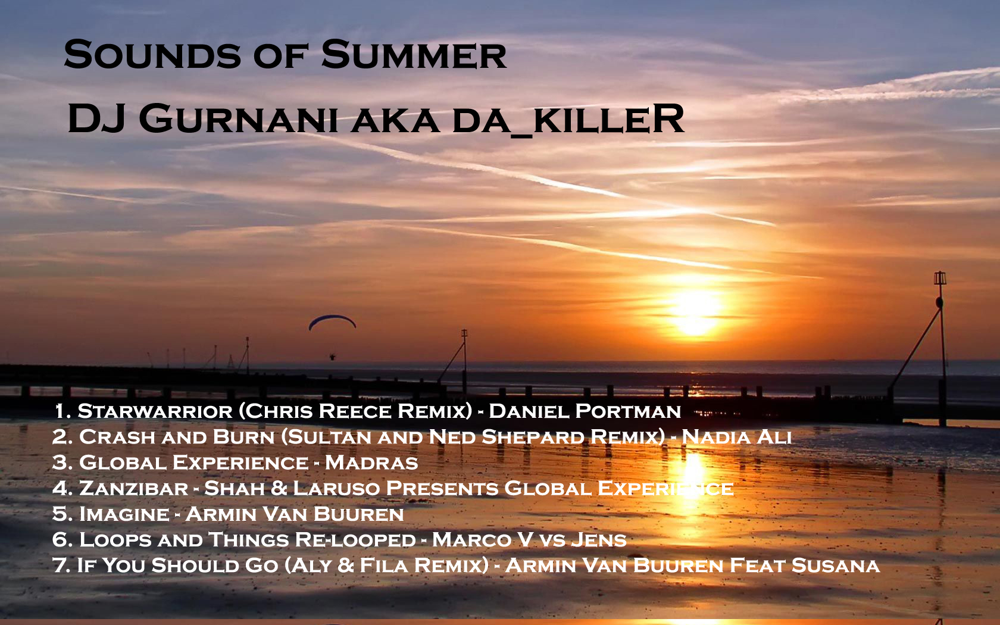
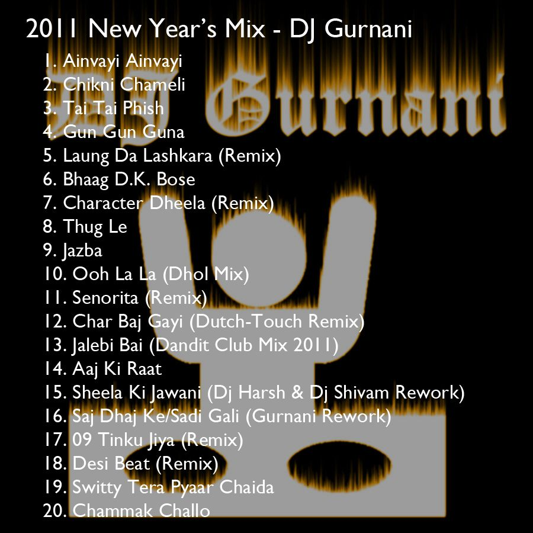

projects
Licence Checker
Most software engineers do not really know how licensing works. For my November 2011 internship at the Open Source Software Foundry, I began to write code that would allow any sort of source code to be checked for any license conflicts and to see if the code conforms to the license prescribed. This is part of the larger license-checking project by the Open Source Software Foundry in Taiwan. Click here to visit the source code repository and to see what the latest features are.
Python extractor
A simple script that will extract any type of compressed format. The code is written in python. Visit the Github repository.
Connect 4
 For my COMP2911 class, we had to create a Connect 4 game and create an AI to go with it. The objective of the project was come up with a simplistic design that would allow for the game to be played in a simplistic manner. An Artificial Intelligence that uses Alpha-Beta pruning was also incorporated into this design. Download the Java Files
For my COMP2911 class, we had to create a Connect 4 game and create an AI to go with it. The objective of the project was come up with a simplistic design that would allow for the game to be played in a simplistic manner. An Artificial Intelligence that uses Alpha-Beta pruning was also incorporated into this design. Download the Java Files
Untitled IPhone App
Phone app development has become a huge market in the past 3 or 4 years. More and more companies are demanding that their engineers know some sort of app development. Since December 2011, I have been learning how to code in Objective C and will hopefully release an iPhone app to display my skills sometime in March 2012.
dj
Top 40 Mixtapes
From a very young age, I was always interested in mixing music. As I grew older, I became a part time DJ, making mix tapes and Djing for funcitons. Here are several compilations that I have released over the past 4 years.
-

- DJ Gurnani - Sounds of Summer
Tracklisting - Progressive Trance Mix
- Echose of the Void 001(Uplifting Trance)
Tracklisting - February 2011 Mixtape (Dance/Top 40)
Tracklisting
{kind=link}
{kind=link}
{kind=link}
Bollywood Mixtapes
Below listed are Bollywood mix tapes I have put together since 2007.
-

- DJ Gurnani - New Years Bollywood Mixtape 2011
Tracklisting - Diwali 2010 Mega Mix - Dj Gurnani
- DJ Gurnani - A Bit of Bhangra, a Bit of 08
Tracklisting - Diwali 2007 Mix - DJ Gurnani
{kind=link}
{kind=link}
Mashups
As a part time DJ, there are certain tracks that I find go quite well together. However when live on the decks, it is sometimes too hard to get the correct timing and/or tempo. The solution is to premix several songs before dropping them live on the decks.
- OMG - Usher feat David Guetta (Gurnani Rework)
- Daft Punk - One More Time (Jazz Intro/Gurnani Mixup)
- Pressure - Nadia Ali/The Weeknd (Remix)
- Saj Dhaj ke/Sadi Gali - RDB (Bassline Edit)
about
About me

My name is Jay Gurnani and I am currently a 3rd year studying Computer Science at the University of New South Wales in Sydney. This is my portfolio website showcasing my latest works in the area of software programming & music mixing (DJ). Check out the links in the top right to see what I've been up to lately.
Email
Email: jay.gurnani@gmail.com
Linked In
Alternatively, you can contact me here at my linked in account.
Github
Click here to view my Github repository.